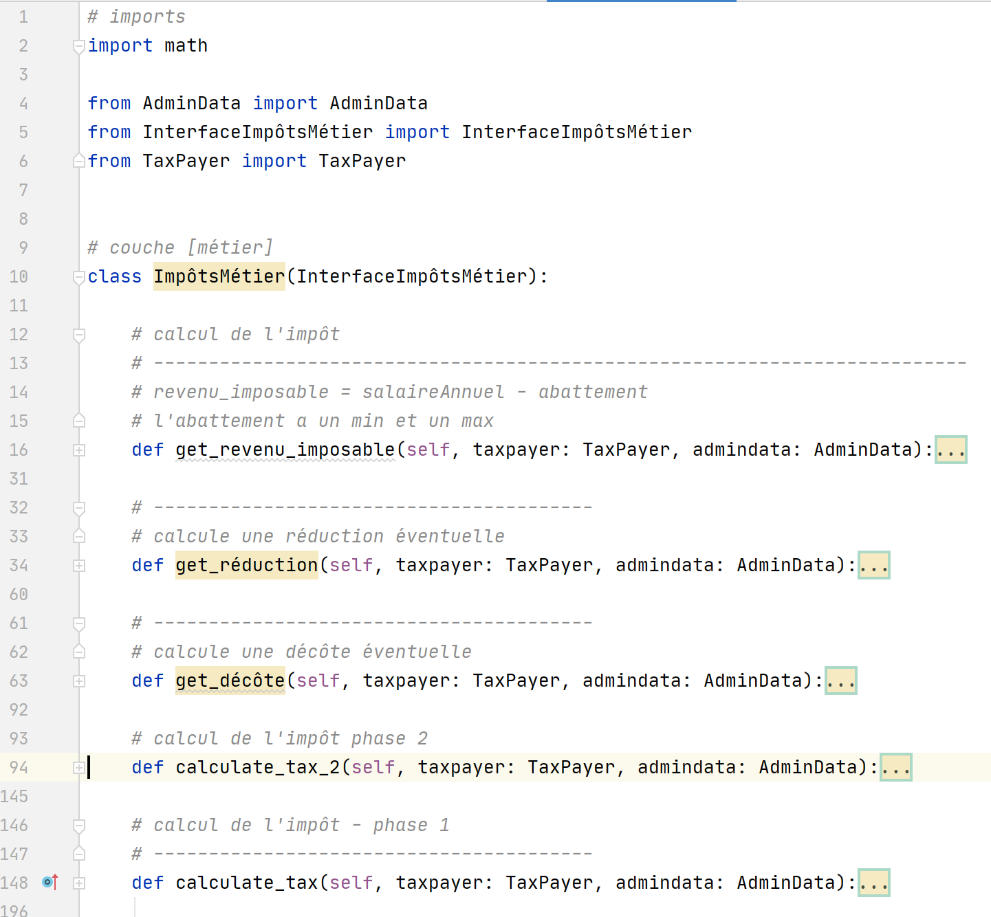
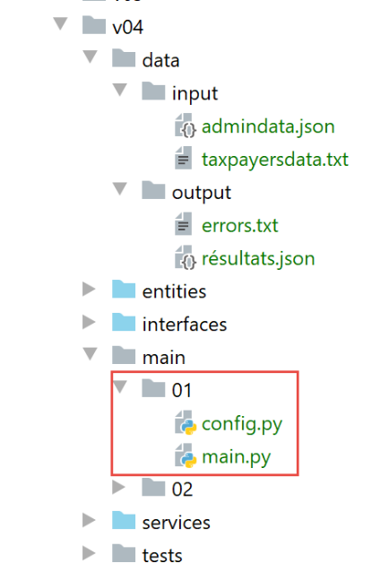

15. Ejercicio de aplicación - versión 4

Retomamos aquí el ejercicio descrito en el párrafo |Versión 3| y ahora lo abordamos con clases e interfaces. Escribiremos dos aplicaciones:
La aplicación 1 será la siguiente:

Un script principal [main] instanciará una capa [dao] y una capa [métier]:
- la capa [dao] se encargará de gestionar los datos almacenados en archivos de texto y, posteriormente, en una base de datos;
- la capa [métier] se encargará de calcular el impuesto;
En esta aplicación, no habrá acciones por parte del usuario: los datos de los contribuyentes se obtendrán de un archivo de texto cuyo nombre se le asignará al módulo [main].
En la aplicación 2, será el usuario quien ingrese los datos de los contribuyentes mediante el teclado. La arquitectura evolucionará entonces de la siguiente manera:

- la capa [dao] (Objeto de Acceso a Datos) se encarga del acceso a los datos externos
- la capa [métier] se encarga de los aspectos de negocio, en este caso el cálculo del impuesto. No se ocupa de los datos. Estos pueden provenir de dos fuentes:
- la capa [dao] para los datos persistentes;
- la capa [ui] para los datos proporcionados por el usuario.
- la capa [ui] (Interfaz de usuario) se encarga de las interacciones con el usuario;
- [main] es el coordinador;
A continuación, las capas [dao], [métier] y [ui] se implementarán cada una mediante una clase. Las capas [métier] y [dao] serán las mismas para ambas aplicaciones. Por eso se han agrupado en una misma versión del ejercicio de aplicación.
15.1. Versión 4 – aplicación 1
La versión 4 calcula el impuesto de una lista de contribuyentes almacenada en un archivo de texto. Tiene la siguiente arquitectura:

15.1.1. Las entidades

Las entidades son clases de datos. Su función es encapsular datos y ofrecer métodos getter y setter que permiten verificar la validez de los mismos. Las entidades se intercambian entre las capas. Una misma entidad puede partir de la capa [ui] para llegar hasta la capa [dao] y viceversa.
15.1.1.1. La clase [ImpôtsError]
Utilizaremos una clase de excepción propia:
# -------------------------------
# clase de excepción
from MyException import MyException
class ImpôtsError(MyException):
pass
Tan pronto como las capas [métier] y [dao] encuentren un problema, lanzarán esta excepción. Deriva de la clase [MyException]. Por lo tanto, se utiliza de la siguiente manera: [raise ImpôtsError(code_erreur, msg_erreur)].
15.1.1.2. La clase [AdminData]
La clase [AdminData] encapsula las constantes que intervienen en el cálculo del impuesto:
from BaseEntity import BaseEntity
# datos de la administración tributaria
class AdminData(BaseEntity):
# claves excluidas del estado de la clase
excluded_keys = []
# claves autorizadas
@staticmethod
def get_allowed_keys() -> list:
return [
"limites",
"coeffr",
"coeffn",
"plafond_qf_demi_part",
"plafond_revenus_celibataire_pour_reduction",
"plafond_revenus_couple_pour_reduction",
"valeur_reduc_demi_part",
"plafond_decote_celibataire",
"plafond_decote_couple",
"plafond_impot_couple_pour_decote",
"plafond_impot_celibataire_pour_decote",
"abattement_dixpourcent_max",
"abattement_dixpourcent_min"
]
- línea 5: la clase [AdminData] extiende la clase [BaseEntity] descrita en el párrafo |BaseEntity|. Recordemos que las clases que extienden la clase [BaseEntity] deben definir:
- un atributo de clase [excluded_keys] (línea 7) que enumera las propiedades del objeto que se excluyen cuando este se transforma en un diccionario;
- un método estático [get_allowed_keys] (líneas 10-26) que devuelve la lista de propiedades aceptadas cuando el objeto se inicializa con un diccionario;
No se utilizaron setters para verificar la validez de los datos utilizados para inicializar un objeto [AdminData]. De hecho, este objeto es único y está definido por configuración, por lo que no es susceptible de contener errores.
15.1.1.3. La clase [TaxPayer]
La clase [TaxPayer] modelará a un contribuyente:
# importaciones
from BaseEntity import BaseEntity
from ImpôtsError import ImpôtsError
# un contribuyente
class TaxPayer(BaseEntity):
# modela a un contribuyente
# id: identificador
# casado: sí / no
# hijos: número de hijos
# salario: su salario anual
# impuesto: monto del impuesto a pagar
# recargo: recargo del impuesto a pagar
# descuento: descuento del impuesto a pagar
# descuento: descuento sobre el impuesto a pagar
# tasa: tasa impositiva del contribuyente
# claves excluidas del informe de la clase
excluded_keys = []
# claves autorizadas
@staticmethod
def get_allowed_keys() -> list:
return ['id', 'marié', 'enfants', 'salaire', 'impôt', 'surcôte', 'décôte', 'réduction', 'taux']
# propiedades
@property
def marié(self) -> str:
return self.__marié
@property
def enfants(self) -> int:
return self.__enfants
@property
def salaire(self) -> int:
return self.__salaire
@property
def impôt(self) -> int:
return self.__impôt
@property
def surcôte(self) -> int:
return self.__surcôte
@property
def décôte(self) -> int:
return self.__décôte
@property
def réduction(self) -> int:
return self.__réduction
@property
def taux(self) -> float:
return self.__taux
# metódos de configuración
@marié.setter
def marié(self, marié: str):
ok = isinstance(marié, str)
if ok:
marié = marié.strip().lower()
ok = marié == "oui" or marié == "non"
if ok:
self.__marié = marié
else:
raise ImpôtsError(31, f"l'attribut marié [{marié}] doit avoir l'une des valeurs oui / non")
@enfants.setter
def enfants(self, enfants):
# «hijos» debe ser un entero >=0
try:
enfants = int(enfants)
erreur = enfants < 0
except:
erreur = True
if not erreur:
self.__enfants = enfants
else:
raise ImpôtsError(32, f"L'attribut enfants [{enfants}] doit être un entier >=0")
@salaire.setter
def salaire(self, salaire):
# el salario debe ser un entero >=0
try:
salaire = int(salaire)
erreur = salaire < 0
except:
erreur = True
if not erreur:
self.__salaire = salaire
else:
raise ImpôtsError(33, f"L'attribut salaire [{salaire}] doit être un entier >=0")
@impôt.setter
def impôt(self, impôt):
# el impuesto debe ser un número entero >=0
try:
impôt = int(impôt)
erreur = impôt < 0
except:
erreur = True
if not erreur:
self.__impôt = impôt
else:
raise ImpôtsError(34, f"L'attribut impôt [{impôt}] doit être un nombre >=0")
@décôte.setter
def décôte(self, décôte):
# el descuento debe ser un número entero >=0
try:
décôte = int(décôte)
erreur = décôte < 0
except:
erreur = True
if not erreur:
self.__décôte = décôte
else:
raise ImpôtsError(35, f"L'attribut décôte [{décôte}] doit être un nombre >=0")
@surcôte.setter
def surcôte(self, surcôte):
# El recargo debe ser un número entero >=0
try:
surcôte = int(surcôte)
erreur = surcôte < 0
except:
erreur = True
if not erreur:
self.__surcôte = surcôte
else:
raise ImpôtsError(36, f"L'attribut surcôte [{surcôte}] doit être un nombre >=0")
@réduction.setter
def réduction(self, réduction):
# El recargo debe ser un número entero >=0
try:
réduction = int(réduction)
erreur = réduction < 0
except:
erreur = True
if not erreur:
self.__réduction = réduction
else:
raise ImpôtsError(37, f"L'attribut réduction [{réduction}] doit être un nombre >=0")
@taux.setter
def taux(self, taux):
# la tasa debe ser un número real >=0
try:
taux = float(taux)
erreur = taux < 0
except:
erreur = True
if not erreur:
self.__taux = taux
else:
raise ImpôtsError(38, f"L'attribut taux [{taux}] doit être un nombre >=0")
Notas:
- la clase [TaxPayer] encapsula a un contribuyente;
- línea 7: la clase [TaxPayer] deriva de la clase [BaseEntity]. Por lo tanto, tiene un identificador [id];
- línea 20: ninguna propiedad queda excluida del estado de un objeto [AdminData];
- líneas 22-25: las propiedades de la clase. Estas se detallan en las líneas 9-17;
- líneas 27-58: getter de los atributos de la clase;
- líneas 60-161: los setters de los atributos de la clase. Cabe recordar que la ventaja de una clase que encapsula datos frente a un simple diccionario es que la clase puede verificar la validez de sus propiedades gracias a sus setters;
15.1.2. La capa [dao]
Vamos a reunir las implementaciones de las capas en una carpeta [services]. Estas clases implementarán las interfaces definidas en la carpeta [interfaces].

15.1.2.1. La interfaz [InterfaceImpôtsDao]
La capa [dao] implementará la siguiente interfaz [InterfaceImpôtsDao] (archivo InterfaceImpôtsDao.py):
# importaciones
from abc import ABC, abstractmethod
# interfaz IImpôtsDao
from AdminData import AdminData
class InterfaceImpôtsDao(ABC):
# lista de tramos del impuesto
@abstractmethod
def get_admindata(self) -> AdminData:
pass
# lista de datos de los contribuyentes
@abstractmethod
def get_taxpayers_data(self) -> dict:
pass
# registro de los resultados del cálculo del impuesto
@abstractmethod
def write_taxpayers_results(self, taxpayers_results: list):
pass
La interfaz define tres métodos:
- [get_admindata]: es el método que obtiene la tabla de tramos impositivos. Cabe señalar que no se proporciona ninguna información sobre cómo obtener estos datos. Más adelante, se encontrarán primero en un archivo de texto y luego en una base de datos. Serán las clases que implementen la interfaz las que deban adaptarse al modo de almacenamiento de los datos. Por lo tanto, tendremos una clase para recuperar los tramos de impuestos de un archivo de texto y otra para recuperarlos de una base de datos. Ambas implementarán el método [get_admindata];
- [get_taxpayers_data]: es el método que obtiene los datos de los contribuyentes. Una vez más, no especificamos dónde se encontrarán. Solo trataremos el caso en que estén en un archivo de texto;
- [write_taxpayers_results]: es el método que almacenará los resultados del cálculo del impuesto. No especificamos dónde. Solo trataremos el caso en el que los resultados se almacenen en un archivo de texto. El parámetro [taxpayers_results] será la lista de resultados que se almacenarán;
15.1.2.2. La clase [AbstractImpôtsDao]
La capa [dao] se implementará mediante dos clases:
- una buscará los datos (contribuyentes, resultados, tramos impositivos) en archivos de texto;
- la otra obtendrá los datos (contribuyentes, resultados) de archivos de texto y los tramos impositivos de una base de datos;
Las dos clases solo se diferenciarán en la gestión de los tramos impositivos. Los datos de los contribuyentes y los resultados de los cálculos del impuesto se gestionarán de la misma manera. Por esta razón, los gestionaremos en una clase padre [AbstractImpôtsDao]. La particularidad de la gestión de los tramos impositivos se gestionará en dos clases hijas:
- la clase [ImpôtsDaoWithAdminDataInJsonFile] obtendrá los tramos de impuestos de un archivo de texto en formato jSON;
- la clase [ImpôtsDaoWithAdminDataInDatabase] obtendrá los tramos de impuestos de una base de datos;
La clase principal [AbstractImpôtsDao] será la siguiente:
# importaciones
import codecs
import json
from abc import abstractmethod
from AdminData import AdminData
from ImpôtsError import ImpôtsError
from InterfaceImpôtsDao import InterfaceImpôtsDao
from TaxPayer import TaxPayer
# clase base para la capa [dao]
class AbstractImpôtsDao(InterfaceImpôtsDao):
# los contribuyentes y sus impuestos se encontrarán en archivos de texto
# constructor
def __init__(self, config: dict):
# config[taxpayersFilename]: el nombre del archivo de texto de los contribuyentes
# config[resultsFilename]: el nombre del archivo jSON de los resultados
# config[errorsFilename]: el nombre del archivo de errores
#: se guardan los parámetros
self.taxpayers_filename = config.get("taxpayersFilename")
self.taxpayers_results_filename = config.get("resultsFilename")
self.errors_filename = config.get("errorsFilename")
# ------------------
# interfaz IImpôtsDao
# ------------------
# lista de datos de los contribuyentes
def get_taxpayers_data(self) -> dict:
…
# registro del impuesto de los contribuyentes
def write_taxpayers_results(self, taxpayers: list):
…
# lectura de los tramos del impuesto
@abstractmethod
def get_admindata(self) -> AdminData:
pass
-
línea 13: la clase [AbstractImpôtsDao] implementa la interfaz [InterfaceImpôtsDao]. Por lo tanto, se encuentran los tres métodos de esta interfaz:
- [get_taxpayers_data]: línea 31;
- [write_taxpayers_results]: línea 35;
- [get_admindata]: línea 40. Este método no será implementado por la clase [AbstractImpôtsDao], por lo que se declara como abstracto (línea 39);
-
línea 16: el constructor recibe un diccionario [config] que contiene la siguiente información:
- [taxpayersFilename]: el nombre del archivo de texto que contiene los datos de los contribuyentes;
- [resultsFilename]: el nombre del archivo de texto en el que se guardarán los resultados;
- [errorsFilename]: el nombre del archivo de texto que enumera los errores encontrados durante el procesamiento del archivo [taxpayersFilename];
El método [get_taxpayers_data] es el siguiente:
# lista de datos de los contribuyentes
def get_taxpayers_data(self) -> dict:
# inicializaciones
taxpayers_data = []
datafile = None
erreurs = []
try:
# apertura del archivo de datos
datafile = open(self.taxpayers_filename, "r")
# se procesa la línea actual del archivo
ligne = datafile.readline()
# N.º de línea
numligne = 0
while ligne != '':
# una línea de +
numligne += 1
# se eliminan los espacios en blanco
ligne = ligne.strip()
# se ignoran las líneas vacías y los comentarios
if ligne != "" and ligne[0] != "#":
try:
# se recuperan los 4 campos id, casado, hijos, salario que forman la línea del contribuyente
(id, marié, enfants, salaire) = ligne.split(",")
# se crea un nuevo TaxPayer
taxpayers_data.append(
TaxPayer().fromdict({'id': id, 'marié': marié, 'enfants': enfants, 'salaire': salaire}))
except BaseException as erreur:
# se registra el error
erreurs.append(f"Ligne {numligne}, {erreur}")
# se lee una nueva línea de contribuyente
ligne = datafile.readline()
# se registran los errores, si los hay
if erreurs:
text = f"Analyse du fichier {self.taxpayers_filename}\n\n" + "\n".join(erreurs)
with codecs.open(self.errors_filename, "w", "utf-8") as fd:
fd.write(text)
# se devuelve el resultado
return {"taxpayers": taxpayers_data, "erreurs": erreurs}
except BaseException as erreur:
# se lanza una excepción ImpôtsError
raise ImpôtsError(11, f"{erreur}")
finally:
# se cierra el archivo
if datafile:
datafile.close()
- línea 4: los datos de los contribuyentes (estado civil, hijos, salario) se colocarán en una lista de objetos de tipo [TaxPayer];
- líneas 8-9: se abre el archivo de texto de los contribuyentes en modo de lectura. Su contenido tiene la siguiente forma:
En comparación con las versiones anteriores:
- cada línea del archivo [taxpayersFilename] comienza con el identificador del contribuyente, un número simple;
- se permiten los comentarios y las líneas en blanco;
- vamos a manejar los errores. Así, las líneas 17, 19 y 21 deben declararse como erróneas. Los errores se registran en un archivo aparte;
Continuemos con el análisis del código:
- línea 4: los datos del archivo de texto se transfieren a la lista [taxPayersData];
- líneas 14-31: el archivo de contribuyentes se lee línea por línea;
- línea 14: se llega al final del archivo cuando se lee una línea vacía (nada, ni siquiera el carácter de fin de línea \r\n);
- línea 20: se ignoran las líneas vacías y los comentarios. Una línea es un comentario si, una vez eliminados los espacios en blanco delante y detrás del texto, el primer carácter es el símbolo #;
- línea 24: una línea correcta está compuesta por cuatro campos separados por una coma. Se recuperan estos campos. La asignación de datos a una tupla de cuatro elementos falla si no hay exactamente cuatro datos asignados;
- línea 25: si alguno de los cuatro campos recuperados [id, marié, enfants, salaire] no es válido, entonces el método [BaseEntity.fromdict] lanzará una excepción de tipo [MyException];
- líneas 25-26: se agrega un objeto [TaxPayer] a la lista [taxpayers_data] de contribuyentes;
- líneas 27-29: los posibles errores se acumulan en una lista [erreurs]. Esta lista se creó en la línea 6;
- líneas 33-36: la lista de errores detectados se guarda en el archivo de texto [errorsFilename]. Hay dos tipos de errores:
- una línea no tenía el número correcto de campos esperados;
- la información de la línea era errónea y no se pudo construir un objeto [TaxPayer];
- líneas 39-41: se intercepta cualquier error (BaseException) y se reporta encapsulándolo en un tipo [ImpôtsError];
- líneas 42-45: en todos los casos, ya sea que se haya logrado o no, se cierra el archivo de texto de los contribuyentes si se había abierto;
El método [write_taxpayers_results] debe generar un archivo jSON con el siguiente formato:
[
{
"id": 1,
"marié": "oui",
"enfants": 2,
"salaire": 55555,
"impôt": 2814,
"surcôte": 0,
"taux": 0.14,
"décôte": 0,
"réduction": 0
},
{
"id": 2,
"marié": "oui",
"enfants": 2,
"salaire": 50000,
"impôt": 1384,
"surcôte": 0,
"taux": 0.14,
"décôte": 384,
"réduction": 347
},
{
"id": 3,
"marié": "oui",
"enfants": 3,
"salaire": 50000,
"impôt": 0,
"surcôte": 0,
"taux": 0.14,
"décôte": 720,
"réduction": 0
},
…
]
El método [write_taxpayers_results] es el siguiente:
# registro del impuesto de los contribuyentes
def write_taxpayers_results(self, taxpayers: list):
# registro de los resultados en un archivo jSON
# contribuyentes: lista de objetos de tipo TaxPayer
# (id, casado, hijos, salario, impuesto, recargo, descuento, reducción, tasa)
# la lista [taxpayers] se guarda en el archivo de texto [self.taxpayers_results_filename]
file = None
try:
# apertura del archivo de resultados
file = codecs.open(self.taxpayers_results_filename, "w", "utf8")
# creación de la lista que se serializará en jSON
mapping = map(lambda taxpayer: taxpayer.asdict(), taxpayers)
# serialización jSON
json.dump(list(mapping), file, ensure_ascii=False)
except BaseException as erreur:
# se vuelve a generar el error con otro tipo
raise ImpôtsError(12, f"{erreur}")
finally:
# se cierra el archivo si estaba abierto
if file:
file.close()
- línea 2: el método recibe una lista de contribuyentes [taxpayers] que debe guardar en el archivo de texto [self.taxpayers_results_filename] en el formato jSON;
- línea 10: creación del archivo UTF-8 con los resultados;
- línea 12: aquí introducimos la función [map], cuya sintaxis en este caso es [map (fonction, liste1)]. La función [fonction] se aplica a cada elemento de [liste1] y genera un nuevo elemento que alimenta una lista [liste2]. Finalmente, para cada i:
liste2[i]=fonction(liste1[i])
Aquí, [liste1] es la lista [taxPayers], una lista de objetos de tipo [TaxPayer]. La función [fonction] se expresa aquí en forma de una función denominada [lambda], que describe la transformación realizada sobre un elemento [taxpayer] de la lista [taxpayers]: cada elemento [taxpayer] se reemplaza por su diccionario [taxpayer.asdict()]. Finalmente, la lista [liste2] obtenida es la lista de diccionarios de los elementos de la lista [taxpayers];
- línea 12: el resultado devuelto por la función [map] no es la lista [liste2], sino un objeto de tipo [map]. Para obtener [liste2], hay que utilizar la expresión [list(mapping)] (línea 14);
- línea 14: la lista [liste2] se guarda en formato jSON en el archivo [self.taxpayers_results_filename];
- líneas 15-17: cualquier tipo de excepción se intercepta y se encapsula en un error de tipo [ImpôtsError] antes de volver a ejecutarse (línea 17);
- líneas 19-21: en todos los casos, ya sea que se haya completado con éxito o haya fallado, el archivo de resultados se cierra si se había abierto;
15.1.2.3. Clase [ImpôtsDaoWithAdminDataInJsonFile]
La clase [ImpôtsDaoWithAdminDataInJsonFile] derivará de la clase [AbstractImpôtsDao] e implementará el método [getAdminData] que su clase padre no ha implementado. Recuperará los datos de la administración tributaria de un archivo jSON:
{
"limites": [9964, 27519, 73779, 156244, 0],
"coeffr": [0, 0.14, 0.3, 0.41, 0.45],
"coeffn": [0, 1394.96, 5798, 13913.69, 20163.45],
"plafond_qf_demi_part": 1551,
"plafond_revenus_celibataire_pour_reduction": 21037,
"plafond_revenus_couple_pour_reduction": 42074,
"valeur_reduc_demi_part": 3797,
"plafond_decote_celibataire": 1196,
"plafond_decote_couple": 1970,
"plafond_impot_couple_pour_decote": 2627,
"plafond_impot_celibataire_pour_decote": 1595,
"abattement_dixpourcent_max": 12502,
"abattement_dixpourcent_min": 437
}
La clase [ImpôtsDaoWithAdminDataInJsonFile] es la siguiente:
# importaciones
import codecs
import json
from AbstractImpôtsDao import AbstractImpôtsDao
from AdminData import AdminData
from ImpôtsError import ImpôtsError
# una implementación de la capa [dao] donde los datos de la administración tributaria se encuentran en un archivo jSON
class ImpôtsDaoWithAdminDataInJsonFile(AbstractImpôtsDao):
# constructor
def __init__(self, config: dict):
# config[admindataFilename]: el nombre del archivo jSON que contiene los datos de la administración tributaria
# config[taxpayersFilename]: el nombre del archivo de texto de los contribuyentes
# config[resultsFilename]: el nombre del archivo jSON de los resultados
# config[errorsFilename]: el nombre del archivo de errores
#: inicialización de la clase Parent
AbstractImpôtsDao.__init__(self, config)
#: lectura de los datos de la administración tributaria
file = None
try:
# apertura del archivo jSON con datos fiscales en modo de lectura
file = codecs.open(config["admindataFilename"], "r", "utf8")
# transferencia del contenido del archivo jSON a un objeto [AdminData]
self.admindata = AdminData().fromdict(json.load(file))
except BaseException as erreur:
# Se vuelve a generar el error como un tipo [ImpôtsError]
raise ImpôtsError(21, f"{erreur}")
finally:
# cierre del archivo si se ha abierto
if file:
file.close()
# -------------
# interfaz
# -------------
# recuperación de datos de la administración tributaria
# el método devuelve un objeto [AdminData]
def get_admindata(self) -> AdminData:
return self.admindata
- línea 11: la clase [ImpôtsDaoWithAdminDataInJsonFile] hereda de la clase [AbstractImpôtsDao]. Por lo tanto, implementa la interfaz [InterfaceImpôtsDao];
- línea 13: el constructor recibe como parámetro un diccionario que contiene la información de las líneas 14 a 17;
- línea 20: se inicializa la clase padre;
- línea 24: se abre el archivo jSON con los datos de la administración tributaria;
- línea 25: se abre el archivo UTF-8 con los datos de la administración tributaria;
- línea 27: se lee el contenido del archivo y se coloca en el objeto [self.admindata] de tipo [AdminData]. Las claves del archivo jSON deben coincidir con las propiedades aceptadas para un objeto [AdminData]; de lo contrario, el método [fromdict] lanzará una excepción;
- líneas 28-30: manejo de excepciones. Las excepciones que puedan ocurrir se encapsulan en un tipo [ImpôtsError] antes de ser relanzadas;
- líneas 32-34: el archivo se cierra si se había abierto;
- líneas 42-43: implementación del método [get_admindata] de la interfaz [InterfaceImpôtsDao];
15.1.3. La capa [métier]
15.1.3.1. La interfaz [InterfaceImpôtsMétier]
La interfaz de la capa [métier] será la siguiente:
# importaciones
from abc import ABC, abstractmethod
from AdminData import AdminData
from TaxPayer import TaxPayer
# interfaz IImpôtsMétier
class InterfaceImpôtsMétier(ABC):
# cálculo del impuesto para un contribuyente
@abstractmethod
def calculate_tax(self, taxpayer: TaxPayer, admindata: AdminData):
pass
- La interfaz [InterfaceImpôtsMétier] define un único método:
- línea 12: el método [calculate_tax] permite calcular el impuesto de un único contribuyente [taxpayer]. [admindata] es el objeto [AdminData] que encapsula los datos de la administración tributaria;
- línea 12: el método [calculate_tax] no devuelve ningún resultado. Los datos obtenidos (impuesto, recargo, descuento, reducción, tasa) se incluyen en el parámetro [taxpayer]: antes de la llamada, estos atributos están vacíos; después de la llamada, se han inicializado;
15.1.3.2. La clase [ImpôtsMétier]
La clase [ImpôtsMétier] implementa la interfaz [InterfaceImpôtsMétier] de la siguiente manera:

Los métodos de la clase provienen del módulo [impôts_module_02] del apartado |El módulo [impots.v02.modules.impôts_module_02]|. Solo se han limitado los parámetros de los métodos a dos:
- taxpayer(id, casado, hijos, salario, impuesto, descuento, recargo, reducción, tasa): el objeto que representa a un contribuyente y su impuesto;
- admindata: el objeto que encapsula los datos de la administración tributaria;
Mostramos en un método los cambios así introducidos;
# cálculo del impuesto - fase 1
# ----------------------------------------
def calculate_tax(self, taxpayer: TaxPayer, admindata: AdminData):
# contribuyente (identificación, estado civil, hijos, salario, impuesto, descuento, recargo, reducción, tasa)
# datos administrativos: información de la administración tributaria
# cálculo del impuesto con hijos
self.calculate_tax_2(taxpayer, admindata)
# los resultados se encuentran en taxpayer
taux1 = taxpayer.taux
surcôte1 = taxpayer.surcôte
impot1 = taxpayer.impôt
# cálculo del impuesto sin hijos
if taxpayer.enfants != 0:
# cálculo del impuesto para el mismo contribuyente sin hijos
taxpayer2 = TaxPayer().fromdict(
{'id': 0, 'marié': taxpayer.marié, 'enfants': 0, 'salaire': taxpayer.salaire})
self.calculate_tax_2(taxpayer2, admindata)
# los resultados están en taxpayer2
taux2 = taxpayer2.taux
surcôte2 = taxpayer2.surcôte
impot2 = taxpayer2.impôt
# aplicación del límite máximo del coeficiente familiar
if taxpayer.enfants < 3:
# PLAFOND_QF_DEMI_PART euros por los dos primeros hijos
impot2 = impot2 - taxpayer.enfants * admindata.plafond_qf_demi_part
else:
# PLAFOND_QF_DEMI_PART euros para los dos primeros hijos, el doble para los siguientes
impot2 = impot2 - 2 * admindata.plafond_qf_demi_part - (taxpayer.enfants - 2) \
* 2 * admindata.plafond_qf_demi_part
else:
# si el contribuyente no tiene hijos, entonces impuesto2 = impuesto1
impot2 = impot1
# se toma el impuesto más alto con la tasa y el recargo correspondientes
(impot, surcôte, taux) = (impot1, surcôte1, taux1) if impot1 >= impot2 else (
impot2, impot2 - impot1 + surcôte2, taux2)
# resultados parciales
taxpayer.impôt = impot
taxpayer.surcôte = surcôte
taxpayer.taux = taux
# cálculo de una posible reducción
self.get_décôte(taxpayer, admindata)
taxpayer.impôt -= taxpayer.décôte
# cálculo de una posible reducción de impuestos
self.get_réduction(taxpayer, admindata)
taxpayer.impôt -= taxpayer.réduction
# resultado
taxpayer.impôt = math.floor(taxpayer.impôt)
- línea 3: el método [calculate_tax] es el único método de la interfaz [InterfaceImpôtsMétier]. Admite dos parámetros:
- [tapPayer]: el contribuyente para quien se calcula el impuesto;
- [admindata]: el objeto que encapsula los datos de la administración tributaria;
- los resultados del cálculo se encapsulan en el parámetro [taxpayer] (líneas 40-50). Por lo tanto, el contenido de este objeto no es el mismo antes y después de llamar al método;
15.1.4. Pruebas de las capas [dao] y [métier]

- [TestDaoMétier] es la clase de prueba UnitTest de las capas [dao] y [métier];
- [config] es el archivo de configuración de las pruebas;
La configuración [config] es la siguiente:
def configure():
import os
# paso 1 ------
# Configuración de la ruta de Python
# carpeta de este archivo
script_dir = os.path.dirname(os.path.abspath(__file__))
# root_dir
root_dir = "C:/Data/st-2020/dev/python/cours-2020/python3-flask-2020/classes"
# dependencias absolutas de la aplicación
absolute_dependencies = [
f"{script_dir}/../entities",
f"{script_dir}/../interfaces",
f"{script_dir}/../services",
f"{root_dir}/02/entities",
]
# se configura el syspath
from myutils import set_syspath
set_syspath(absolute_dependencies)
# paso 2 ------
# Configuración de la aplicación
config = {
# rutas absolutas de los archivos de la aplicación
"admindataFilename": f"{script_dir}/../data/input/admindata.json"
}
# instanciación de las capas de la aplicación
from ImpôtsDaoWithAdminDataInJsonFile import ImpôtsDaoWithAdminDataInJsonFile
from ImpôtsMétier import ImpôtsMétier
dao = ImpôtsDaoWithAdminDataInJsonFile(config)
métier = ImpôtsMétier()
# se incluyen las instancias de las capas en la configuración
config["dao"] = dao
config["métier"] = métier
# se genera la configuración
return config
- líneas 4-23: se configura la ruta de Python para las pruebas;
- líneas 32-41: se instancian las capas [dao] y [métier]. Se colocan sus referencias en el diccionario [config];
- línea 44: se devuelve este diccionario;
La clase de prueba [TestDaoMétier] es la siguiente:
import unittest
def get_config() -> dict:
# Configuración de la aplicación
import config
# se devuelve la configuración
return config.configure()
class TestDaoMétier(unittest.TestCase):
# se ejecuta antes de cada método test_
def setUp(self) -> None:
# se recupera la configuración de las pruebas
config = get_config()
# se almacena cierta información
self.métier = config['métier']
self.admindata = config['dao'].get_admindata()
def test_1(self) -> None:
from TaxPayer import TaxPayer
# {'casado': 'sí', 'hijos': 2, 'salario': 55555,
# 'impuesto': 2814, 'recargo': 0, 'descuento': 0, 'reducción': 0, 'tasa': 0.14}
taxpayer = TaxPayer().fromdict({"marié": "oui", "enfants": 2, "salaire": 55555})
self.métier.calculate_tax(taxpayer, self.admindata)
# verificación
self.assertAlmostEqual(taxpayer.impôt, 2815, delta=1)
self.assertEqual(taxpayer.décôte, 0)
self.assertEqual(taxpayer.réduction, 0)
self.assertAlmostEqual(taxpayer.taux, 0.14, delta=0.01)
self.assertEqual(taxpayer.surcôte, 0)
def test_2(self) -> None:
from TaxPayer import TaxPayer
# {'casado': 'sí', 'hijos': 2, 'salario': 50000,
# 'impuesto': 1384, 'recargo': 0, 'descuento': 384, 'reducción': 347, 'tasa': 0.14}
taxpayer = TaxPayer().fromdict({'marié': 'oui', 'enfants': 2, 'salaire': 50000})
self.métier.calculate_tax(taxpayer, self.admindata)
# verificaciones
self.assertAlmostEqual(taxpayer.impôt, 1384, delta=1)
self.assertAlmostEqual(taxpayer.décôte, 384, delta=1)
self.assertAlmostEqual(taxpayer.réduction, 347, delta=1)
self.assertAlmostEqual(taxpayer.taux, 0.14, delta=0.01)
self.assertEqual(taxpayer.surcôte, 0)
def test_3(self) -> None:
from TaxPayer import TaxPayer
# {'casado': 'sí', 'hijos': 3, 'salario': 50000,
# 'impuesto': 0, 'recargo': 0, 'descuento': 720, 'reducción': 0, 'tasa': 0.14}
taxpayer = TaxPayer().fromdict({'marié': 'oui', 'enfants': 3, 'salaire': 50000})
self.métier.calculate_tax(taxpayer, self.admindata)
# verificaciones
self.assertEqual(taxpayer.impôt, 0)
self.assertAlmostEqual(taxpayer.décôte, 720, delta=1)
self.assertEqual(taxpayer.réduction, 0)
self.assertAlmostEqual(taxpayer.taux, 0.14, delta=0.01)
self.assertEqual(taxpayer.surcôte, 0)
def test_4(self) -> None:
from TaxPayer import TaxPayer
# {'casado': 'no', 'hijos': 2, 'salario': 100000,
# 'impuesto': 19884, 'recargo': 4480, 'descuento': 0, 'reducción': 0, 'tasa': 0.41}
taxpayer = TaxPayer().fromdict({'marié': 'non', 'enfants': 2, 'salaire': 100000})
self.métier.calculate_tax(taxpayer, self.admindata)
# verificaciones
self.assertAlmostEqual(taxpayer.impôt, 19884, delta=1)
self.assertEqual(taxpayer.décôte, 0)
self.assertEqual(taxpayer.réduction, 0)
self.assertAlmostEqual(taxpayer.taux, 0.41, delta=0.01)
self.assertAlmostEqual(taxpayer.surcôte, 4480, delta=1)
def test_5(self) -> None:
from TaxPayer import TaxPayer
# {'casado': 'no', 'hijos': 3, 'salario': 100000,
# 'impuesto': 16782, 'recargo': 7176, 'descuento': 0, 'reducción': 0, 'tasa': 0.41}
taxpayer = TaxPayer().fromdict({'marié': 'non', 'enfants': 3, 'salaire': 100000})
self.métier.calculate_tax(taxpayer, self.admindata)
# verificaciones
self.assertAlmostEqual(taxpayer.impôt, 16782, delta=1)
self.assertEqual(taxpayer.décôte, 0)
self.assertEqual(taxpayer.réduction, 0)
self.assertAlmostEqual(taxpayer.taux, 0.41, delta=0.01)
self.assertAlmostEqual(taxpayer.surcôte, 7176, delta=1)
def test_6(self) -> None:
from TaxPayer import TaxPayer
# {'casado': 'sí', 'hijos': 3, 'salario': 100000,
# 'impuesto': 9200, 'recargo': 2180, 'descuento': 0, 'reducción': 0, 'tasa': 0.3}
taxpayer = TaxPayer().fromdict({'marié': 'oui', 'enfants': 3, 'salaire': 100000})
self.métier.calculate_tax(taxpayer, self.admindata)
# verificaciones
self.assertAlmostEqual(taxpayer.impôt, 9200, delta=1)
self.assertEqual(taxpayer.décôte, 0)
self.assertEqual(taxpayer.réduction, 0)
self.assertAlmostEqual(taxpayer.taux, 0.3, delta=0.01)
self.assertAlmostEqual(taxpayer.surcôte, 2180, delta=1)
def test_7(self) -> None:
from TaxPayer import TaxPayer
# {'casado': 'sí', 'hijos': 5, 'salario': 100000,
# 'impuesto': 4230, 'recargo': 0, 'descuento': 0, 'reducción': 0, 'tasa': 0.14}
taxpayer = TaxPayer().fromdict({'marié': 'oui', 'enfants': 5, 'salaire': 100000})
self.métier.calculate_tax(taxpayer, self.admindata)
# verificaciones
self.assertAlmostEqual(taxpayer.impôt, 4230, delta=1)
self.assertEqual(taxpayer.décôte, 0)
self.assertEqual(taxpayer.réduction, 0)
self.assertAlmostEqual(taxpayer.taux, 0.14, delta=0.01)
self.assertEqual(taxpayer.surcôte, 0)
def test_8(self) -> None:
from TaxPayer import TaxPayer
# {'casado': 'no', 'hijos': 0, 'salario': 100000,
# 'impuesto': 22986, 'recargo': 0, 'descuento': 0, 'reducción': 0, 'tasa': 0.41}
taxpayer = TaxPayer().fromdict({'marié': 'non', 'enfants': 0, 'salaire': 100000})
self.métier.calculate_tax(taxpayer, self.admindata)
# verificaciones
self.assertAlmostEqual(taxpayer.impôt, 22986, delta=1)
self.assertEqual(taxpayer.décôte, 0)
self.assertEqual(taxpayer.réduction, 0)
self.assertAlmostEqual(taxpayer.taux, 0.41, delta=0.01)
self.assertEqual(taxpayer.surcôte, 0)
def test_9(self) -> None:
from TaxPayer import TaxPayer
# {'casado': 'sí', 'hijos': 2, 'salario': 30000,
# 'impuesto': 0, 'recargo': 0, 'descuento': 0, 'reducción': 0, 'tasa': 0}
taxpayer = TaxPayer().fromdict({'marié': 'oui', 'enfants': 2, 'salaire': 30000})
self.métier.calculate_tax(taxpayer, self.admindata)
# verificaciones
self.assertEqual(taxpayer.impôt, 0)
self.assertEqual(taxpayer.décôte, 0)
self.assertEqual(taxpayer.réduction, 0)
self.assertAlmostEqual(taxpayer.taux, 0.0, delta=0.01)
self.assertEqual(taxpayer.surcôte, 0)
def test_10(self) -> None:
from TaxPayer import TaxPayer
# {'casado': 'no', 'hijos': 0, 'salario': 200000,
# 'impuesto': 64210, 'recargo': 7498, 'descuento': 0, 'reducción': 0, 'tasa': 0,45}
taxpayer = TaxPayer().fromdict({'marié': 'non', 'enfants': 0, 'salaire': 200000})
self.métier.calculate_tax(taxpayer, self.admindata)
# verificaciones
self.assertAlmostEqual(taxpayer.impôt, 64210, 1)
self.assertEqual(taxpayer.décôte, 0)
self.assertEqual(taxpayer.réduction, 0)
self.assertAlmostEqual(taxpayer.taux, 0.45, delta=0.01)
self.assertAlmostEqual(taxpayer.surcôte, 7498, delta=1)
def test_11(self) -> None:
from TaxPayer import TaxPayer
# {'casado': 'sí', 'hijos': 3, 'salario': 200000,
# 'impuesto': 42842, 'recargo': 17283, 'descuento': 0, 'reducción': 0, 'tasa': 0.41}
taxpayer = TaxPayer().fromdict({'marié': 'oui', 'enfants': 3, 'salaire': 200000})
self.métier.calculate_tax(taxpayer, self.admindata)
# verificaciones
self.assertAlmostEqual(taxpayer.impôt, 42842, 1)
self.assertEqual(taxpayer.décôte, 0)
self.assertEqual(taxpayer.réduction, 0)
self.assertAlmostEqual(taxpayer.taux, 0.41, delta=0.01)
self.assertAlmostEqual(taxpayer.surcôte, 17283, delta=1)
if __name__ == '__main__':
unittest.main()
Comentarios
- línea 11: la clase de prueba extiende la clase [unittest.TestCase];
- líneas 13-19: en una prueba UnitTest, el método [setUp] se ejecuta antes de cada uno de los métodos [test_];
- línea 16: se recupera la configuración del script [config] analizado anteriormente;
- línea 18: se almacena una referencia en la capa [métier];
- línea 19: se solicita a la capa [dao] el objeto [AdminData] que encapsula los datos de la administración tributaria y se almacena;
- líneas 21-173: 11 pruebas cuyos resultados se verificaron en el sitio web oficial de impuestos de 2019 |https://www3.impots.gouv.fr/simulateur/calcul_impot/2019/simplifie/index.htm|;
- líneas 21-33: todas las pruebas se han elaborado siguiendo el mismo modelo;
- línea 22: se importa la clase [TaxPayer];
- línea 24: contribuyente sometido a prueba;
- línea 25: resultados esperados;
- línea 26: creación del objeto [TaxPayer] del contribuyente;
- línea 27: cálculo de su impuesto. El resultado se encuentra en [taxpayer];
- líneas 29-33: verificación de los resultados obtenidos;
- línea 29: se verifica el monto del impuesto con una precisión de un euro. De hecho, las pruebas han demostrado que los resultados obtenidos por el algoritmo de este documento pueden diferir de las cifras oficiales en un máximo de 1 euro;
La ejecución de las pruebas arroja los siguientes resultados:

15.1.5. Script principal

El script principal se configura mediante el siguiente script [config]:
def configure():
import os
# paso 1 ------
# configuración de la ruta de Python
# carpeta de este archivo
script_dir = os.path.dirname(os.path.abspath(__file__))
# root_dir
root_dir = "C:/Data/st-2020/dev/python/cours-2020/python3-flask-2020/classes"
# dependencias de la aplicación
absolute_dependencies = [
# dependencias locales
f"{script_dir}/../../entities",
f"{script_dir}/../../interfaces",
f"{script_dir}/../../services",
f"{root_dir}/02/entities",
]
# se establece la ruta del sistema
from myutils import set_syspath
set_syspath(absolute_dependencies)
# paso 2 ------
# Configuración de la aplicación
config = {
# rutas absolutas de los archivos de la aplicación
"taxpayersFilename": f"{script_dir}/../../data/input/taxpayersdata.txt",
"resultsFilename": f"{script_dir}/../../data/output/résultats.json",
"admindataFilename": f"{script_dir}/../../data/input/admindata.json",
"errorsFilename": f"{script_dir}/../../data/output/errors.txt"
}
# instanciación de las capas de la aplicación
from ImpôtsDaoWithAdminDataInJsonFile import ImpôtsDaoWithAdminDataInJsonFile
from ImpôtsMétier import ImpôtsMétier
dao = ImpôtsDaoWithAdminDataInJsonFile(config)
métier = ImpôtsMétier()
# se incluyen las instancias de las capas en la configuración
config["dao"] = dao
config["métier"] = métier
# se genera la configuración
return config
Es similar al utilizado para la prueba de las capas [métier] y [dao].
El script principal [main.py] es el siguiente:
# se configura la aplicación
import config
config = config.configure()
# importaciones
from ImpôtsError import ImpôtsError
# se recuperan las capas de la aplicación (ya están instanciadas)
dao = config["dao"]
métier = config["métier"]
try:
# recuperación de los tramos del impuesto
admindata = dao.get_admindata()
# lectura de los datos de los contribuyentes
taxpayers = dao.get_taxpayers_data()["taxpayers"]
# ¿de los contribuyentes?
if not taxpayers:
raise ImpôtsError(51, f"Pas de contribuables valides dans le fichier {config['taxpayersFilename']}")
# cálculo del impuesto de los contribuyentes
for taxpayer in taxpayers:
# El contribuyente es tanto un parámetro de entrada como de salida
# «contribuyente» se modificará
métier.calculate_tax(taxpayer, admindata)
# escritura de los resultados en un archivo de texto
dao.write_taxpayers_results(taxpayers)
except ImpôtsError as erreur:
# visualización del error
print(f"L'erreur suivante s'est produite : {erreur}")
finally:
# Finalizado
print("Travail terminé...")
Notas
- líneas 2-4: se recupera la configuración de la aplicación. También se sabe que se ha construido la ruta de Python de la aplicación;
- líneas 9-11: se recuperan las referencias de las capas [métier] y [dao];
- línea 15: se obtienen los datos de la administración tributaria;
- línea 17: se obtiene la lista de contribuyentes para quienes se debe calcular el impuesto;
- líneas 19-20: si esta lista está vacía, se genera una excepción;
- líneas 22-25: cálculo del impuesto de los distintos objetos [taxpayer] mediante la capa [métier];
- línea 27: [taxpayers] es ahora una lista de objetos [TaxPayer] en la que los atributos (impuesto, descuento, recargo, reducción, tasa) han recibido un valor. Esta lista se escribe en un archivo jSON;
- líneas 28-30: detección de un posible error;
- líneas 31-33: se ejecutan en todos los casos;
La ejecución del script arroja los mismos resultados que en las versiones anteriores. El archivo de errores de los contribuyentes fue una novedad en esta versión. Tras ejecutar el script [main], su contenido es el siguiente:
Analyse du fichier C:\Data\st-2020\dev\python\cours-2020\python3-flask-2020\impots\v04\main\01/../../data/input/taxpayersdata.txt
Ligne 17, not enough values to unpack (expected 4, got 2)
Ligne 19, too many values to unpack (expected 4)
Ligne 21, MyException[1, L'identifiant d'une entité <class 'TaxPayer.TaxPayer'> doit être un entier >=0]
Las líneas con errores eran las siguientes:
15.2. Versión 4 – aplicación 2
En esta versión, es el usuario quien ingresa la lista de contribuyentes mediante el teclado. La arquitectura de la aplicación será la siguiente:

Aparece un nuevo módulo: la capa [ui] (Interfaz de usuario), que interactuará con el usuario. Esta capa contará con una interfaz y será implementada por una clase.

15.2.1. La interfaz [InterfaceImpôtsUi]
# importaciones
from abc import ABC, abstractmethod
# interfaz InterfaceImpôtsUI
class InterfaceImpôtsUi(ABC):
# ejecución de la clase que implementa la interfaz
@abstractmethod
def run(self):
pass
La interfaz [InterfaceImpôtsUi] tendrá solo un método, el de las líneas 8 a 10. Aquí, la interfaz se implementará con una aplicación de consola, pero también se podría implementar con una interfaz gráfica. Los parámetros que se pasan al método [run] no serían los mismos en ambas implementaciones. Para solucionar este problema, el método habitual es:
- no pasar parámetros al método [run] (o pasar el mínimo de parámetros);
- pasar parámetros al constructor de la clase que implementa la interfaz. Estos pueden variar de una implementación a otra. Dichos parámetros se registran como atributos de la clase;
- asegurarse de que el método [run] utilice estos atributos de clase (self.x);
Este método permite contar con una interfaz muy general que se especifica mediante los parámetros de los constructores de cada clase de implementación. Este método ya se utilizó para la versión modular n.º 1.
15.2.2. La clase [ImpôtsConsole]
La clase [ImpôtsConsole] implementa la interfaz [InterfaceImpôtsUi] de la siguiente manera:
# importaciones
import re
from InterfaceImpôtsUi import InterfaceImpôtsUi
from TaxPayer import TaxPayer
# capa [UI]
class ImpôtsConsole(InterfaceImpôtsUi):
# constructor
def __init__(self, config: dict):
# se almacenan los parámetros
self.admindata = config['dao'].get_admindata()
self.métier = config['métier']
def run(self):
# diálogo interactivo con el usuario
fini = False
while not fini:
# ¿Está casado el contribuyente?
marié = input("Le contribuable est-il marié / pacsé (oui/non) (* pour arrêter) : ").strip().lower()
# verificación de la validez de la entrada
while marié != "oui" and marié != "non" and marié != "*":
# mensaje de error
print("Tapez oui ou non ou *")
# ¿Repetir la pregunta?
marié = input("Le contribuable est-il marié / pacsé (oui/non) (* pour arrêter) : ").strip().lower()
# ¿Terminado?
if marié == "*":
# diálogo finalizado
return
# número de hijos
enfants = input("Nombre d'enfants : ").strip()
# verificación de la validez de la entrada
if not re.match(r"^\d+$", enfants):
# mensaje de error
print("Tapez un nombre entier positif ou nul")
# volvamos a intentarlo
enfants = input("Nombre d'enfants : ").strip()
# salario anual
salaire = input("Salaire annuel : ").strip()
# verificación de la validez de la entrada
if not re.match(r"^\d+$", salaire):
# mensaje de error
print("Tapez un nombre entier positif ou nul")
# volvemos a intentarlo
salaire = input("Salaire annuel : ").strip()
# cálculo del impuesto
taxpayer = TaxPayer().fromdict({'id': 0, 'marié': marié, 'enfants': int(enfants), 'salaire': int(salaire)})
self.métier.calculate_tax(taxpayer, self.admindata)
# visualización
print(f"Impôt du contribuable = {taxpayer}\n\n")
# siguiente contribuyente
- línea 9: la clase [ImpôtsConsole] implementa la interfaz [InterfaceImpôtsUi];
- línea 11: el constructor de la clase recibe un parámetro, el diccionario [config] de la configuración de la aplicación;
- línea 13: se recuperan los datos de la administración tributaria que permiten calcular el impuesto;
- línea 14: se almacena una referencia en la capa [métier];
- línea 16: implementación del método [run] de la interfaz;
- líneas 19-53: diálogo con el usuario. Consiste
- en solicitar los tres datos (estado civil, hijos, salario) del contribuyente;
- en calcular su impuesto;
- mostrarlo;
- el diálogo termina cuando el usuario responde * a la primera pregunta;
- líneas 20-27: se pregunta si el contribuyente está casado y se verifica la validez de la respuesta;
- líneas 29-31: si el usuario respondió ‘*’ a la pregunta, se detiene el diálogo;
- líneas 32-39: se pregunta por el número de hijos del contribuyente y se verifica la validez de la respuesta;
- líneas 40-47: se pregunta cuál es el salario anual del contribuyente y se verifica la validez de la respuesta;
- líneas 48-50: con esta información, se calcula, mediante la capa [métier], el impuesto del contribuyente;
- línea 52: se muestra el monto del impuesto;
15.2.3. El script principal
El script principal [main] se configura mediante el siguiente archivo [config]:
def configure():
import os
# paso 1 ------
# Configuración de la ruta de Python
# carpeta de este archivo
script_dir = os.path.dirname(os.path.abspath(__file__))
# root_dir
root_dir = "C:/Data/st-2020/dev/python/cours-2020/python3-flask-2020/classes"
# dependencias de la aplicación
absolute_dependencies = [
# dependencias locales
f"{script_dir}/../../entities",
f"{script_dir}/../../interfaces",
f"{script_dir}/../../services",
f"{root_dir}/02/entities",
]
# se establece la ruta del sistema
from myutils import set_syspath
set_syspath(absolute_dependencies)
# paso 2 ------
# Configuración de la aplicación
config = {
# rutas absolutas de los archivos de la aplicación
"admindataFilename": f"{script_dir}/../../data/input/admindata.json",
}
# instanciación de las capas de la aplicación
from ImpôtsDaoWithAdminDataInJsonFile import ImpôtsDaoWithAdminDataInJsonFile
from ImpôtsMétier import ImpôtsMétier
from ImpôtsConsole import ImpôtsConsole
# capa DAO
dao = ImpôtsDaoWithAdminDataInJsonFile(config)
# capa de negocio
métier = ImpôtsMétier()
# se incluyen las instancias de las capas en la configuración
config["dao"] = dao
config["métier"] = métier
# capa de interfaz de usuario
ui = ImpôtsConsole(config)
config["ui"] = ui
# se genera la configuración
return config
El script coordinador es el siguiente (main.py):
# se configura la aplicación
import config
config = config.configure()
# importaciones
from ImpôtsError import ImpôtsError
# se recuperan las capas de la aplicación (ya están instanciadas)
ui = config["ui"]
# código
try:
# ejecución de la capa [ui]
ui.run()
except ImpôtsError as erreur:
# se muestra el mensaje de error
print(f"L'erreur suivante s'est produite : {erreur}")
finally:
# se ejecuta en todos los casos
print("Travail terminé...")
- líneas 1-4: se recupera la configuración de la aplicación;
- línea 10: se obtiene una referencia a la capa [ui];
- líneas 12-21: la estructura del código es la misma que en la aplicación anterior: código rodeado de un try / catch para detener cualquier posible excepción;
- línea 15: se solicita que se ejecute la capa [ui]; así comienza el diálogo con el usuario;
- líneas 16-18: interceptación de una posible excepción;
A continuación se muestra un ejemplo de ejecución:
C:\Data\st-2020\dev\python\cours-2020\python3-flask-2020\venv\Scripts\python.exe C:/Data/st-2020/dev/python/cours-2020/python3-flask-2020/impots/v04/main/02/main.py
Le contribuable est-il marié / pacsé (oui/non) (* pour arrêter) : oui
Nombre d'enfants : 3
Salaire annuel : 200000
Impôt du contribuable = {"id": 0, "marié": "oui", "enfants": 3, "salaire": 200000, "impôt": 42842, "surcôte": 17283, "taux": 0.41, "décôte": 0, "réduction": 0}
Le contribuable est-il marié / pacsé (oui/non) (* pour arrêter) : *
Travail terminé...
Process finished with exit code 0